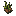

Grass
Generated: 2026-07-15
Itempage. Current status:source-only.

| Field | Value |
|---|---|
| ID | grass |
| Page type | Item |
| Current status | source-only |
| Storage | world block metadata |
| Player-facing? | World-only |
| Description | Surface turf. Drops dirt. |
| Status explanation | This id exists on the world-state side; mining or harvesting it resolves to other carried items instead of preserving this token in the backpack. |
| Image path | art/generated/items/grass.png |
| Fallback / placeholder | Generated 16x16 swatch via BlockRegistry.item_icon() if the canonical item icon is absent. |
Summary
Grass is a world-state item token, not a normal carried resource.
Acquisition
No live acquisition route is currently defined.
Current Uses
No meaningful live downstream use is currently defined.
Related Pages
Notes
- Current runtime behavior resolves this token through the world block, not the backpack.